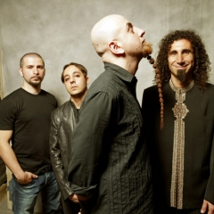

About
System of a Down (also known abbreviated as SoaD or just simply as System) is an Armenian-American heavy metal band formed in Glendale, California, in 1994. It currently consists of members Serj Tankian (lead vocals, keyboards), Daron Malakian (guitar, vocals), Shavo Odadjian (bass, backing vocals), and John Dolmayan (drums), who replaced original drummer Andy Khachaturian in 1997
The band achieved commercial success with the release of five studio albums, three of which debuted at number one on the US Billboard 200. System of a Down has been nominated for four Grammy Awards and their song "B.Y.O.B." won a Grammy Award for Best Hard Rock Performance in 2006. The band went on hiatus in 2006 and reunited in 2010, and they have continued to perform live occasionally since then. Other than two new songs in 2020 ("Protect the Land" and "Genocidal Humanoidz"),[2] System of a Down has not released a full-length record since the Mezmerize and Hypnotize albums in 2005. The band has sold over 40 million records worldwide, while two of their singles "Aerials" and "Hypnotize" reached number one on Billboard's Alternative Songs chart.